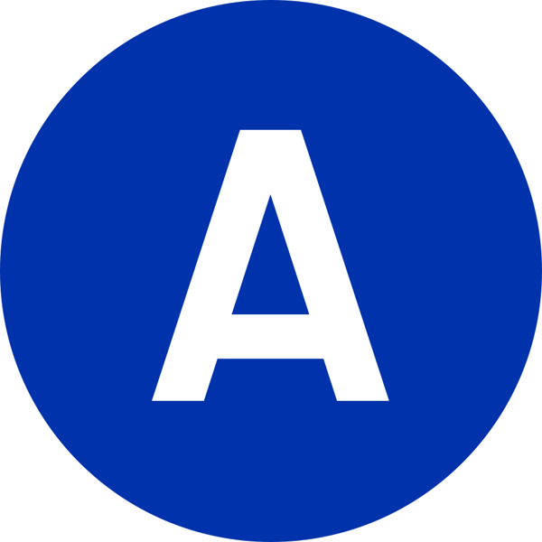

References / Signage / 53
NYCTA Graphics Standards Manual
Unimark’s rulebook for New York’s subway signs: one grotesque, a strict module, and colored route discs.
- Source
- MoMA: New York City Transit Authority Graphics Standards Manual
- Creator
- Massimo Vignelli, Bob Noorda, Unimark International Corporation, New York
- Made
- 1966–1970
- Style
- International Typographic Style (agent-proposed, not yet reviewed by a person)
- Moods
- Systematic, clear, utilitarian, rational
- Evidence
- Read the MoMA record and the OCR text of the scanned manual on the Internet Archive. Page images were not inspected. The stored route disc was inspected; it is a vector reconstruction, not a scan of the manual.
- Reviewed
- Rights
- Open license, stored. License: public domain. Rights policy
Context
MoMA dates the manual 1966–70: lithograph with screenprinted binder, 34.6 × 39.4 × 7.3 cm, gift of the designer, object 374.2004. MoMA.
The manual’s pages carry the line “Unimark International, Consultant Designers” and the date 1970. Its contents list an information tree, sign distribution, type face, type sizes and leading, letter spacing, and color coding. Its reproduction pages give the Standard Medium alphabet. Internet Archive scan, OCR.
The color-coding page says each line is shown by a letter or number in white on a colored disc, arranged in alphabetical and then numerical order, from an eight-color code. Internet Archive scan.
Wikipedia says Unimark had nearly finished the signage project by 1970, producing this manual, and that Vignelli’s 1972 subway map followed. Wikipedia: Massimo Vignelli. Standards Manual reissued the manual in 2014 after a Kickstarter campaign. Standards Manual.
Observed
- Stored route disc: a solid blue circle with a white capital A centered in it.
- The A is a grotesque capital with a flat apex and horizontal cuts at the foot of each stroke.
- The letter is about half the height of the circle, which leaves a wide margin of color around it.
Why it belongs
The manual moves the style from the poster wall into infrastructure: typographic rules become operating rules that sign makers must follow, and color stops being decoration and becomes data.
Borrow
Write type size, leading, and spacing as multiples of one module so every sign or screen shares proportions.
Reserve color for coding (lines, categories, states) and keep type black or white.
Order repeated tokens by a fixed rule, for example letters before numbers.
Measured
Machine-extracted by tools/image-traits.py on . Full measurement.
- Mean chroma
- 0.46
- Palette
- #0033ab 67%
- #ffffff 31%
- #dae2f3 0%
- #375dbc 0%
- #b0c0e5 0%
- #103daf 0%
- #c9d3ed 0%
- #1e48b4 0%

